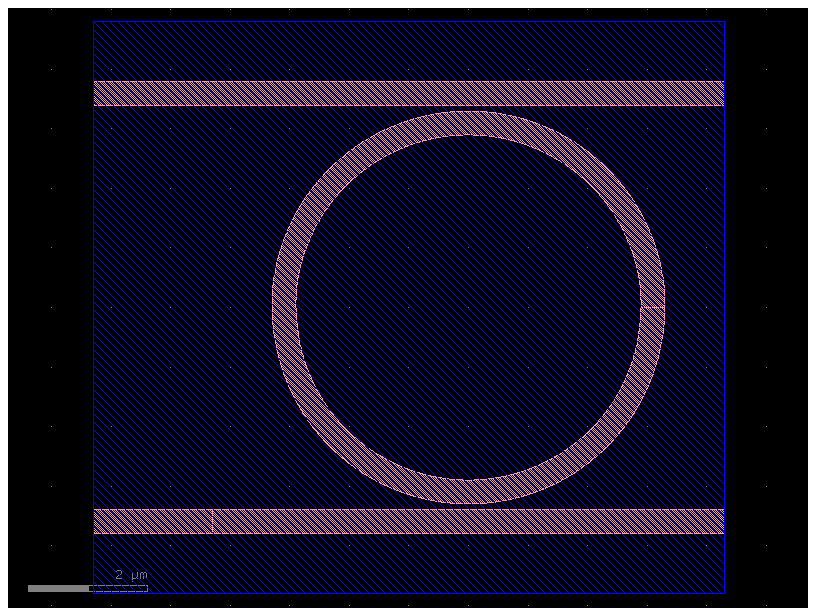

Photonic integrated circuit: ring resonator#
Overview#
We simulate small silicon ring resonator coupled to parallel waveguides buried in silica cladding. Compare with Lumerical example
Geometry#
import luminescent as lumi
from gdsfactory.technology import LogicalLayer, LayerLevel, LayerStack
import gdsfactory as gf
import numpy as np
import os
import math
import matplotlib.pyplot as plt
# simulation folder
name='photonic_ring_resonator'
path = os.path.join("runs", name)
# length units are arbitrary so long as they are consistent, in this case [um]. everything gets normalized around origin wavelength and period at backend.
wavelength = 1.55 # characteristic wavelength [um]
bandwidth = 0.1 # wavelength bandwidth [um]
wavelengths = np.linspace(wavelength - bandwidth / 2, wavelength + bandwidth / 2, 401)
r = 3.1 # radius of ring
w_wg = 0.4 # width of waveguide
gap = 0.1 # gap between waveguide and ring
th = 0.18 # th of waveguide
# gds layers
WG = (1, 0) # waveguide layer
BBOX = (10, 0) # bounding box layer
# we create geometry in gdsfactory. alternatively, you can import .gds layout into gdsfactory or .stl bodies directly into ours
# margins
height_port_margin = lateral_port_margin = 0.8
margin = 1.25 * lateral_port_margin
zmargin = 1.25 * height_port_margin
source_port_margin = 1.0 * (w_wg + 2 * lateral_port_margin)
# draw layout in gdsfactory. `gf.components` defaults to layer WG = (1, 0)
c = gf.Component()
dut = c << gf.components.ring(radius=r, width=w_wg, layer=WG)
l_branch = 2 * r + w_wg + source_port_margin + 2*margin
xoffset = -source_port_margin - margin - r - w_wg / 2
yoffset = w_wg + gap + r
branch_top = c << gf.components.straight(length=l_branch, width=w_wg)
branch_top.move((xoffset, w_wg + gap + r))
branch_bottom_left = c << gf.components.straight(length=source_port_margin, width=w_wg)
branch_bottom_left.move((xoffset, -yoffset))
branch_bottom_right = c << gf.components.straight(length=l_branch - source_port_margin, width=w_wg)
branch_bottom_right.connect("o1", branch_bottom_left.ports["o2"])
# add ports
c.add_port("o1", port=branch_bottom_right.ports["o1"])
c.add_port("o2", port=branch_bottom_right.ports["o2"]) # thru channel
c.add_port("o3", port=branch_top.ports["o1"]) # drop channel
c << gf.components.bbox(component=c, layer=BBOX, top=margin, bottom=margin)
c.plot()

Solve#
# for gdsfactory, we need vertical layer stack. "core" layer is special as `height_port_margin` are demarcated from it for defining modal sources and monitors. during 3d meshing lower mesh order layers supplant higher mesh order layers
layer_stack = LayerStack(
layers={
"core": LayerLevel(
layer=LogicalLayer(layer=WG),
thickness=th,
zmin=0.0,
material="Si",
mesh_order=10,
),
}
)
# our default lumi.MATERIALS_LIBRARY lib covers limited range of photonic and PCB materials_library. here we create our own materials_library. `background` is special and tags regions outside any bodies during meshing
materials_library = {
"Si": lumi.Material(epsilon=12.25),
"SiO2": lumi.Material(epsilon=2.25),
}
materials_library["background"] = materials_library[
"SiO2"
]
# source launches `source_port_margin` in front of port. it's bidirectional: the other direction goes into PML. pulse spectrum rolls off gradually past bandwidth limits.
sources = [
lumi.Source(
"o1",
source_port_margin=source_port_margin,
wavelength=wavelength,
bandwidth=wavelength/5,
modenums=[0], # fundamental mode only
)
]
lx=w_wg + 2 * lateral_port_margin
ly=th + 2 * height_port_margin
modes = [lumi.Mode(
ports=[f'o{i}' for i in [1, 2, 3]], # ports that this mode applies to
wavelengths=lumi.chebyshev_nodes(wavelengths[0], wavelengths[-1]),
start=[-lx/2, -height_port_margin], # local xy frame, local y=0 at global zmin of port layer
stop=[lx/2, th + height_port_margin],
)]
lumi.make(
path=path,
component=c,
wavelengths=wavelengths,
sources=sources,
modes=modes,
# limits
zmin=-zmargin,
zmax=th + zmargin,
# materials and layers
materials_library=materials_library,
layer_stack=layer_stack,
# accuracy and speed settings
gpu="CUDA", # use GPU acceleration
nres=8, # number of grid points per wavelength in material (not vacuum)
relative_courant=0.95, # relative to maximum theoretical Courant number at
relative_pml_depths=[1, 1, 0.3],
Tsim=600, # max time [periods]
field_decay_threshold=0.001, # field energy decay threshold for stopping simulation
saveat=50, # save and plot field every n periods
)
lumi.solve(path)
saving mode plots to runs\photonic_ring_resonator\modes\1
showing modes for first wavelength
using simulation folder C:\Users\default.LAPTOP-HMRU58MH\Desktop\lumi\luminescent\runs\photonic_ring_resonator
0.02767857142857143
0.02767857142857143
0.02767857142857143
0.02767857142857143
loading problem from C:\Users\default.LAPTOP-HMRU58MH\Desktop\lumi\luminescent\runs\photonic_ring_resonator
========================================
can't find fdtd binary


Visualize#
views=[lumi.View("Hz", z="halfway", y=0, x=0)]
lumi.peek(path,views) # halfway and final snapshots
========================================
failed plotting new frames


lumi.movie(path,views) # full movie - this may take a while to generate
# due to frame aliasing the movie may appear to show the signal going around once when in effect it goes around multiple times. To fix this, use lower `saveat`
========================================
failed plotting new frames
Video generated successfully at C:\Users\default.LAPTOP-HMRU58MH\Desktop\lumi\luminescent\runs\photonic_ring_resonator\simulation.gif!

Analysis#
sol = lumi.load(path)
x = wavelengths
y = lumi.query(sol, "To3@0,o1@0") # wavelength or frequency ordered depending on problem setup
# y = lumi.query(sol, "T3,1") # wavelength or frequency ordered depending on problem setup
# y=math.abs2(sol['waves']['o3@0']/sol['waves']['o1@0'])
plt.plot(x, y)
plt.xlabel("wavelength [um]")
plt.ylabel("drop channel transmitted power")
plt.show()
loading solution from C:\Users\default.LAPTOP-HMRU58MH\Desktop\lumi\luminescent\runs\photonic_ring_resonator